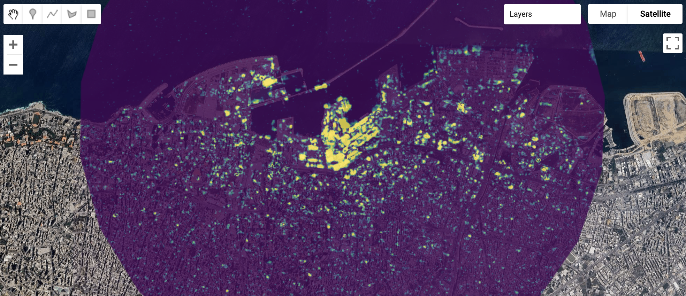

8 SAR
8.1 Summary
In our last lecture, we shifted focus to SAR (Synthetic Aperture Radar), an active sensor system that differs from the passive satellites we’ve learned about so far. Unlike passive sensors that rely on reflected sunlight, SAR actively emits electromagnetic signals and records the backscatter.
We first covered some key SAR concepts, including the difference between photographic and radar apertures. In optical imaging, a photographic aperture refers to the opening in a camera lens that controls the amount of light entering. In radar, however, “aperture” refers to the antenna’s effective size. A longer antenna produces a narrower radar beam, which improves spatial resolution. Since physically long antennas are impractical for spaceborne sensors, SAR simulates a larger antenna by capturing multiple backscatter signals as the sensor moves along its flight path. This technique effectively increases resolution, allowing SAR to capture fine-scale surface details.
Different SAR polarizations help distinguish between various surface types. Vertical-vertical (VV) polarization is most effective for detecting surface roughness, while vertical-horizontal (VH) polarization is better suited for analyzing volume scatterers like vegetation. Double-bounce reflections, where radar waves bounce between two surfaces (e.g., buildings and the ground), can also be identified, making SAR a useful tool for mapping urban environments. Figure 1 illustrates these SAR fundamentals.

SAR data types and techniques can be applied to different purposes. SAR data is presented in three forms: Power scale for statistical analysis, amplitude scale for visualization and dB scale for detecting differences in backscatter intensity. A common application of SAR is change-detection, which can be achieved through image subtraction or ratio-based techniques (e.g., mean and log ratios), paired with statistical methods like t-tests to identify significant differences. Image fusion at the decision-, obect-, or pixel-level can also be employed. SAR is effective for generating Digital Elevation Models (DEMs) as well. Interferometric SAR (InSAR) is a technique that leverages phase differences between two SAR images taken at different times or from slightly different angles to generate DEMs. Differential InSAR (DInSAR), meanwhile, extends this method to detect surface changes over time, allowing for precise analysis of land movement.
During the practical session, we applied SAR techniques by working through Ollie Ballinger’s analysis of the Beirut explosion. An adapted pixelwise t-test was used to detect changes between pre- and post-explosion SAR data, revealing damage to built infrastructure. The results (Figure 2) highlighted SAR’s unique ability to detect change in environments.

A recurring theme throughout this week, and this module, has been the importance of choosing the right method for the research question at hand. Its critical to think carefully about the problem and work backwards from there. Learning about SAR revealed entirely new possibilities for analysis using remote sensing but reinforced this idea that all methods have strengths and limitations which must be carefully considered.
8.2 Application
SAR has a wide range of applications across various fields. I found a categorization by Tsokas et al. (2022) particularly useful for understanding its diverse uses:
Mapping & Land Classification: including land cover classification, forest monitoring, shellfish and oil spill detection, sea ice, and glaciers.
Parameter Retrieval: including ocean topography, wind and wave retrieval, and soil moisture estimation.
Object Detection: including object detection and recognition, as well as navigation.
With regard to object detection, one application I found particularly interesting is the use of SAR for detecting ships. In their study, Zhang et al. (2021) review the use of the SAR Ship Detection Dataset (SSDD) for deep learning-based SAR ship detection. SSDD is an open dataset produced by one of the authors and includes SAR images with varying resolutions, polarizations, and surface conditions. The authors discuss the dataset’s widespread adoption but also acknowledge enduring challenges and areas for improvement. To me, this paper highlighted the value of open data and collaboration for advancing the field more broadly. I respect that, while the authors emphasized the uptake in use of their dataset, they are also cognizant and transparent about its limitations. This paper also underscored SAR’s versatility and practical application, particularly in terms of maritime traffic control, trade monitoring, and naval defense.
Another SAR application that stood out to me was wetland monitoring, as explored by Adeli et al. [-Adeli et al. (2020)]. Wetlands provide essential ecosystem services but face increasing threats from human activity and climate change. The authors highlight how SAR is well-suited for wetland analysis because it can detect variations in surface roughness and moisture content, capabilities that are challenging for other remote sensing sources. The study conducts a meta-analysis of 172 papers, revealing trends such as the growing use of multi-sensor SAR data and the integration of C- and L-band frequencies, which improve classification accuracy. However, challenges remain, including backscatter similarity between different wetland types, difficulties in selecting the optimal SAR specifications (e.g., incidence angle, frequency, and polarization), and geometric distortions in SAR imagery. The authors emphasize the need for further research to address these issues and maximize SAR’s effectiveness in wetland monitoring and environmental change detection.
SAR’s unique capabilities make it potentially better suited for certain analyses than the passive sensors we’ve learned about and worked with in previous weeks. These papers demonstrate how SAR can be applied to diverse issues, enabling more effective land management, trade monitoring, and security measures by providing detailed surface insights. SAR’s ability to capture data regardless of weather conditions or time of day makes it an invaluable tool for continuous monitoring and rapid response applications.
8.3 Reflection
It was interesting to learn about a new satellite type this week and explore the different applications that come with it. SAR offers several advantages, such as its ability to penetrate cloud cover and capture surface texture at a high resolution. Being able to collect data in all weather conditions makes it particularly useful in circumstances where frequent and continuous monitoring is necessary. SAR also, however, comes with limitations. The data can be complex to process and interpret, perhaps less intuitive than dealing with passive sensors.
What struck me was the clear policy applications of SAR across a wide range of fields. In defense, SAR-based object detection can enhance surveillance and border security, providing critical intelligence that would be difficult to obtain with passive sensors alone. In trade, SAR can play a key role in monitoring maritime traffic, tracking illegal fishing activities, and overseeing port operations. For environmental change, it offers powerful methods for tracking issues such as deforestation, wetland loss, glacial retreat, and urban expansion. Altogether, SAR presents a great opportunity to create new evidence bases on which decision-making and policy can be built.
Since this is my last diary entry, I’ve been reflecting more broadly on everything we’ve covered through the term. The range of satellites, methods, and applications we’ve explored has been both impressive and inspiring. Remote sensing offers powerful tools to address a vast array of issues like urban planning, environmental conservation, public health, economic development and conflict, just to name a few. There are so many different ways to use these technologies to manage our cities and natural environments for the better.
The key challenge, however, is choosing the right data and methods for the research question at hand. And I would argue this task can be just as difficult as conducting the analysis itself. With so many data sources, analytical techniques, and even methods for validating other methods, it’s crucial to think carefully about the problem and select the approach that best fits the specific context. While the vast amount of available data and analytical possibilities is exciting, it can also feel overwhelming. Being precise with the research question and critically assessing the best way to approach it is essential.
Ultimately, remote sensing is not just a technical exercise, but also requires deep reflection. The best way to ensure meaningful results, strong research, and real-world project success is to be deliberate about data selection, methodology, and interpretation.